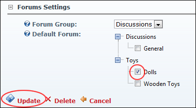

How to set the default forum for this instance of the Forum module. Note: These settings are stored on a per page/module basis so even a copy of a module can have a different default forum.

Setting the Forum Group for a Forum Module